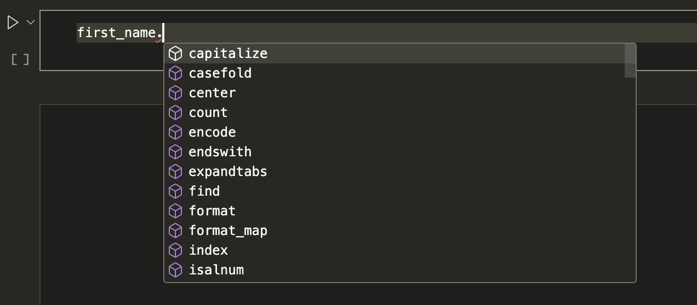

variable = "value"0.4 - Introduction to Python
basics
getting started
data types
data structures
introduction
dataframes
variables
operations
functions
python
This notebook introduces you to the fundamental concepts in Python. It might be a little complex for a start, but it covers basically all of the fundamental syntax you need to know in later notebooks. Don’t get overwhelmed! Remember, you can always review this later!
Outline
Prerequisites:
- Introduction to Jupyter
Learning Objectives
- Learn the basic concepts of variable assignment, functions, and tabs in Python
- Learn the basics of variables (numbers, texts, and booleans)
- Import and load data into Jupyter Notebook
- Access and perform manipulations on data
Introduction
In this notebook, we will be introducing Python, which is a programming language designed for use in data science and analysis. If you are familiar with other programming languages, such as R, this will likely be very familiar to you - if this is your first time coding, don’t be intimidated! Try to play around with the examples and exercises as you work through this notebook; it’s easiest to learn to program in Python by trying things for yourself.
Part 1: Basic Programming Concepts
To begin, we’ll go over the most basic concepts used in Python. Specifically, we will look at variable assignment and functions. Later we will go over the different things that can go into functions and variables, but it will be important to first grasp how they work.
1.1 Variable Assignment
Variable assignment is fairly self explanatory: we will assign a value to a variable that we can then use for our analysis.
To assign a value to a variable, we put the variable name on the left and the value on the right, as such:
Now, Python will remember this assignment for the rest of our Python session (the time we’re running code without closing Python). If you quit and close the session, Python will not remember that we assigned the value value to variable.
Now if we run variable, it’ll output value just like we told it to!
variableIf we don’t assign a value to our object, Python will return an error. Try it for yourself below.
xThis is because we haven’t defined our variable. When Python reads our code, it reads from right to left. So it will first read the value we picked (originally value), and then the computed value is stored in our object (variable). In the previous case, we didn’t define x (there is no value attached, no equal sign), so Python was not able to interpret what we meant by “x”.
We can change how we define different variables as much as we would like. For example, if we were to run:
variable = 10we’ve now changed our variable to store the value 10. Notice that we can change the type of variable we are working with (from string to numeric). Now if we run variable, we will see a different output:
variablePython only keeps the most recent assignment, so if you change the value your variable holds, Python won’t keep track of what you had put before. That’s why it is useful to keep track of what you’re working on using comments within your code.
Part 2: Objects and Types
As always when learning a new language, it’s important to get a good grasp of the different object types in Python and how to use them. Whenever we work with Python, we will be manipulating different kinds of information, which is referred to as an “object”. In Python, objects can contain both data and functions we can use on our data. These functions are sometimes called methods.
We can take a look at what an object holds, oth in terms of data and methods, by typing . after the object’s name and hitting tab. This is typically called tab completion or introspection. Doing this will list out a few different options that you can scroll through. See below:

Try doing this yourself below. Try to find the method split. Once you have found it, you can use the method by adding parentheses after it.
full_name = "enter your name"
full_nameCan you tell what this method does?
Another common thing we will want to do with variables and objects is find out their type. The type of data will determine what kinds of methods and functions we can perform. We will go over each type in depth at a later stage. To figure out what type of object we are working with, we can use the type() function. This is a simple function where the input (what goes in between the parentheses) is the object we want to study. Let’s try below with the variable first_name.
type(first_name)The variable first_name is a string (str). We will look at what that means a bit later.
2.1. Numbers
The first type of data we will look at is numbers. Python has two types of numbers.
- Integers, known as
intin Python, can only take the values of integers:{... -157, ..., -1, 0, 14, 267, ...}. - Floating Point Numbers, known as
float, can be any real number, such as-1.5435, 3.14, 12, -10234.4573835.
The easiest way to tell the difference between these two types of numbers is the presence of a decimal point. Integers do not have decimals, floats do. Below, we will create some int and float variables.
x_int = 1
x_float = 1.0
z_int = 123
z_float = 1230.5
z_float2 = 1_230.5 # Note that if we want to use commas to separate larger numbers
# (e.g. to indicate the thousands), we use an underscore _ instead of a comma.2.2 Strings
Strings store all text data. For data to be stored as a string, it must be written within quotation marks. For example,
"this is a string" # quotation marks!
'this is also a string' # ' ' also works!
this is not a string # do you see the syntax warning?As we saw above when learning the type() function, Python identifies strings as str. You can see this again below:
type(first_name)2.3 Booleans
Booleans are the last data type we will look at. Booleans simply denote true or false. They will be useful later on, when we start working with operations. For now, let’s create some booleans and see what they look like.
x = True # notice how we aren't putting True in quotation marks. What do you think would happen if we did?
y = False type(x)xy3. Operations
We’ll now take a look at different operations or functions we can run in Python. Many functions are type-dependent, meaning they only work for certain variable types, so we will go through each type and their associated functions.
3.1. Operations on Numbers
Python as a calculator
The first thing we can do in Python is basic math. When our variables are numbers (either int or float), we can easily use Python to add, subtract, and divide numbers (there are many more things Python can do!). Let’s give this a try below.
a = 12
b = 2
print(a + b) # We ask Python to print all the answers so we can see everything.
print(a - b) # Otherwise, Python would only show us the most recent result.
print(a * b)
print(a / b)
print(a ** b) # Note that Python uses ** for exponentiation. Did you notice that Python returned an integer for almost every operation? It did however convert the answer to a float for the division operation. Whenever possible, Python will return an integer type for operations between integers, but any operation involving a float will result in a float. See below
a = 12.0
b = 2
print(a + b)
print(a - b)
print(a * b)
print(a / b)
print(a ** b)Python also allows us to do multiple operations in one line. As you would expect, it follows the standard order of operations PEMDAS (parentheses, exponents, multiplication, division, addition, subtraction). We’ll try this below - what do you think c and d will be? You can check your answers by using the print() function.
a = 4
b = 7
c = a - b / b
d = (a - b) / bOther math functions
If we want to use other math functions, such as taking the sine or cosine of a number, we need to use the math package. As we learned earlier, to use a package, we write the package name (or our nickname for it) followed by a . and then we can click [TAB] to look through the available functions. So, if we wanted to take sin(2), we would do the following:
import math # don't forget to import the package first!
math.sin(2)Floor and Modulus Division
The last mathematical operation we will look at is floor and modulus division. This relates to division concepts we learned when initially going through division: quotients and remainders. Let’s say we are dividing x by y, two numbers.
- Floor division:
x // ywill return the quotient, or the number of times the divisor goes into the dividend. - Modulus division:
x % ywill return the remainder.
Let’s try it below. Can you figure out what the operations will return if x is 44 and y is 7?
x = 44
y = 7
#print(x // y) #uncomment to check your answers
#print(x % y)3.2. Operations on Strings
Arithmetics
Some of the arithmetic operations we learned above can also be used for strings. - We can put two strings together by using + - We can repeat a string n times by writing n*variable
Let’s try this below!
x = "Good"
y = "Morning"
print(x + y)
print(3 * x )Note that if we were to try to use *, -, or / with strings, Python would return an error. You can see for yourself below.
#x * y # uncomment and run these lines to see the error message
#x - y
#x / yString methods (operations)
There are a ton of different operations we can perform on strings. We won’t be able to look at the all in this notebook, but again if you want to take a look, simply type a . after the variable and press [TAB]. You can then scroll through some of the methods.
We’ll list out a few of the essential methods below. These are ones that you will frequently see when working with textual data.
x = "Good Morning"
# Again, you don't need to write print() each time. We are only doing this so that you can see each output and compare
print(x.lower()) # makes everything lower case. don't forget the extra parentheses!!
print(x.upper()) # makes everything upper case. don't forget the extra parentheses!!
print(x.count("o")) # counts how many times a particular string appears
print(x.count("ing"))String Formatting
The next operation we’ll look at involves repeating strings.
Let’s say we have a dataset that contains many dates and the weather, and we want to write a sentence saying “Month Day, Year was X”, where “Month” would be the month, “Day” would be the date, “Year” would be the year and “X” would be the weather. We can do this easily with string formatting, which allows us to use a generic placeholder to replace each individual value of the variable. To do so, we would replace the specific value we are thinking of with the variable name, in squiggly brackets {}, when we are writing out the sentence. Let’s take a look at an example.
month = "January"
day = "24th"
year = "2025"
X = "sunny"
sentence = f"{month} {day}, {year} was {X}."
print(sentence)The f at the beginning of the string allows Python to interpolate what is between the {}.
We can also use string formatting for calculations. To do so, we’d substitute the calculation we want to do into the {}.
We can do this for basic math as such:
print(f"{5}**2 = {5**2}")And we can do this within sentences as well. Let’s say we want Canada’s 2024 GDP ($2.515 trillion) in billions. Instead of typing out the number, we could just write
GDP = 2.515
string = f"Canada's GDP was ${GDP * 1_000} billion in 2024"
print(string)If we want to reuse a string we created a format for earlier, we can use the method format. To do this though, we do not put f before the string. For example,
sentence = "{month} {day}, {year} was {X}."
sentence.format(month = "February", day = "28th", year = 2016, X = "rainy")There’s a lot more we can do with string formatting. If you want to learn more, you can find information here.
3.3. Operations on Booleans
Comparisons
Most of the time, booleans will be created through comparison operations. For example, we might want a variable that evaluates if someone is older than 18. We would thus create a boolean which is True if the age of the individual is greater than 18.
For two variables x and y, we can do the following comparisons:
- Greater than:
x > y - Less than:
x < y - Equal to:
x == y - Greater than or equal to:
x >= y - Less than or equal to:
x <= y
We’ll try this below with a simple example. Feel free to change the values to see for yourself!
x = 1
y = 2
print("x > y is", x > y)
print("x < y is", x < y)
print("x <= y is", x <= y)Negation
Sometimes, we will prefer to determine if a statement is not true or not false. This is called negating a statement. We can negate a boolean in Python by adding the statement not before True or False.
print(not True)
print(not False)Multiple Comparisons using and / or
Sometimes, we will want to do multiple comparisons. For example, we might want to look at all individuals who are employed and have children, or we might want to individuals with cars or bicycles. We can do this in Python using the mathematical ands and ors. This means that
aandbareTrueonly when bothaANDbareTrueaorbisTruewhen at least one ofaorbisTrue
Using the examples above: - The statement “We are studying individuals who are employed and have children” means we will only include individuals that are both employed AND who have children - The statement “We are studying people with cars or bicycle” means we will look at everyone who has a car, everyone who has a bicycle, and everyone who has a car and a bicycle.
Let’s test these out below. Try thinking of the answers yourself before running the code!
True and False # do you think this will be true or false?True and TrueTrue or False False or False# we can chain multiple comparisons!
# order of operations will still apply
True and (False or True) all and any
As we saw, we can use and and or to process two booleans at a time. We can also process all our booleans at once!
To do so, we can use the functions all and any. These functions will test all the booleans we’re working on at the same time.
all(bools)will tell us if all the booleans inboolsareTrue. If they are all true, Python will returnTrue. If even one of them is not true, Python will returnFalse.any(bools)will tell us if we have any booleans that areTrue. If even one of our booleans is true, Python will returnTruewhen running this command.
3. Packages
Similarly to R, Python has a host of packages that we can use that contain different functions and tools. Some examples of packages are:
pandas, which implements the tools necessary to do scalable data analysis.
matplotlib, which contains visualization tools.
requests and urllib, which allow Python to interface with the internet.
We’ll be using packages all throughout the Python modules, so it will be important to learn how to install them and how to open them.
To install a package, we simply run the code import package. To access and open the package that we’ve installed in our session, we run the code package.function_name. Let’s do this below with the package sys, which helps Python work with our computer.
import sys
sys.version # We want to find the Python version our computer is usingSome packages have fairly long names, so Python has allowed us to abbreviate their names to nicknames when importing them to make our code less heavy. For example, we can abbreviate a package name to p by writing import package as p. Thus, instead of writing package.function_name, we can just write p.function_name.
Typically, people use the following nicknames for packages:
import pandas as pd
import numpy as np
import matplotlib as mpl
import datetime as dt
In theory, you can abbreviate the packages to any nickname you’d like, but for simplicity and comprehensibility, we recommend using the common nicknames listed above.
Part 3: Dealing with Errors and Getting Help
3.1. Errors
Sometimes in our analysis we can run into errors in our code. This happens to everyone - don’t worry - it’s not a reason to panic. Understanding the nature of the error we are confronted with can be a helpful first step to finding a solution. There are two common types of errors:
Syntax errors: This is the most common error type. These errors result from invalid code statements/structures that Python doesn’t understand. Suppose Python speaks English, speaking to it in German or broken English certainly would not work! Here are some examples of common syntax errors: the associated package is not loaded, misspelling of a command as Python is case-sensitive, unmatched/incomplete parenthesis etc. How we handle syntax errors is case-by-case: we can usually solve syntax errors by reading the error message and finding what is often a typo or by looking up the error message on the internet using resources like stack overflow.
Semantic errors: These errors result from valid code that successfully executes but produces unintended outcomes. Again, let us suppose Python speaks English. Although we asked it to hand us an apple in English and Python successfully understood, it somehow handed us a banana! This is not okay! How we handle semantic errors is also case-by-case: we can usually solve semantic errors by reading the error message and searching it online.
Now that we have all of these terms and tools at our disposal, we can begin to load in data and operate on it using what we’ve learned.
3.2. Getting Help
If you are ever running a function and get stuck, are not sure what the function does, or need a refresher on what the inputs are, Python has a way to get help.
To do this in Jupyter notebooks, we place a ? after the function name and rn the cell. Depending on how you launched Jupyter, the help text will either be displayed in the cell below or on a new panel at the bottom of the screen that you can exit by hitting the escape key.
Try this below with the print function:
print?
1.2 Comments
Comments are a common concept found in all coding languages. These are little notes that we are able to leave in our code that won’t affect our outputs, but that allow us to keep track of what we’ve been doing.
To leave a comment in Python, just include
#at the beginning of your comment. Python ignores everything that comes after a #. See some examples below:Notice how the comment we left to the right of the first two lines do not affect the code. We are able to print
first_nameandlast_namewithout any issues. Try printingcolour, though.print(colour)
Notice how this doesn’t work? Recall that Python doesn’t read anything to the right of the
#. Because we put the#at the beginning of the line, Python did not read the line where we created the variablecolour. If we wanted to create this variable, we would have to remove the#. Try doing that and see what pops up when you runprint(colour)!